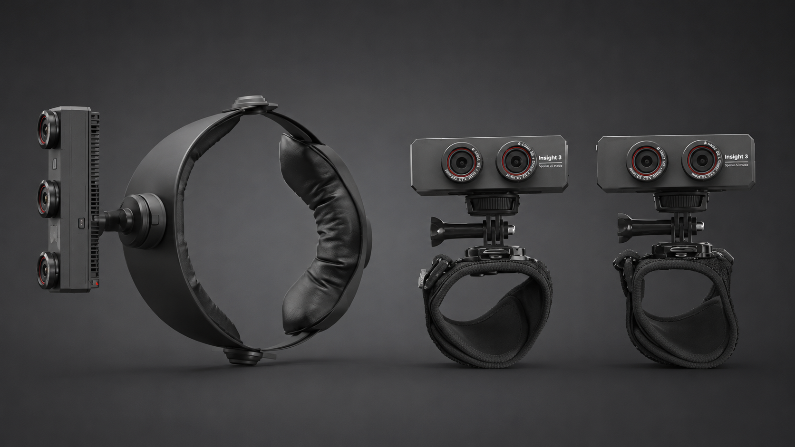
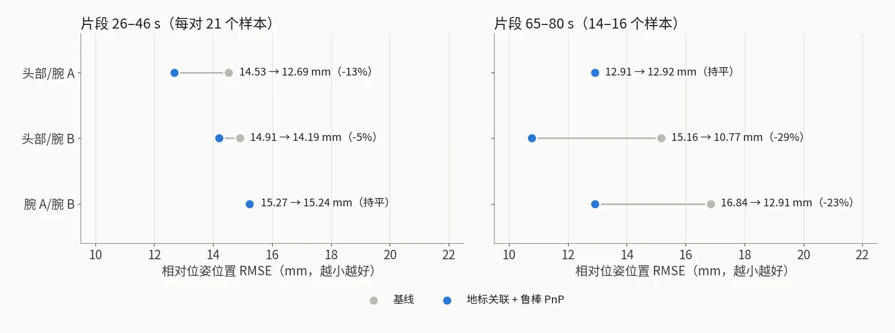
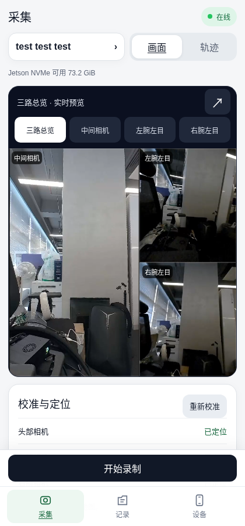
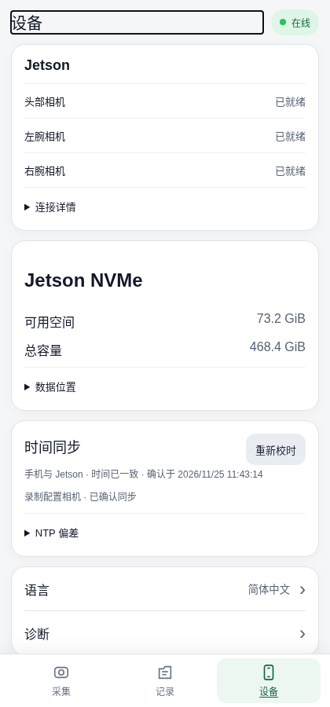
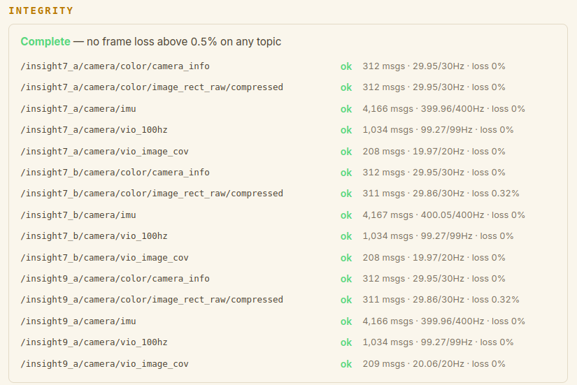
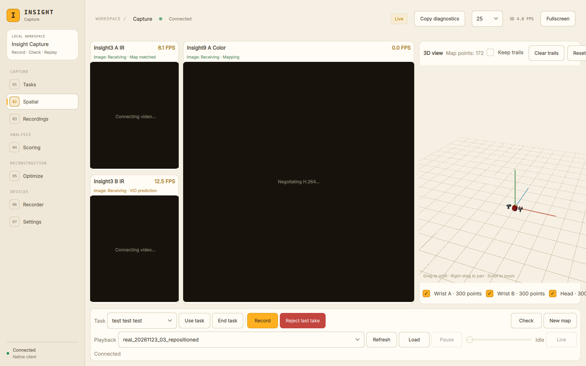
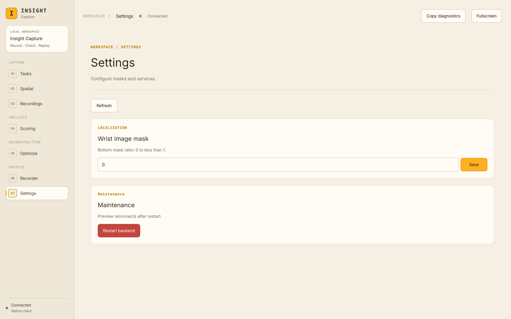

Insight Capture Dashboard
头部和双腕三台相机接入 Jetson，现场用手机监看，事后在原生 Qt 里回放和质检。难点是让三台相机各自的 VIO 落到同一个坐标系：头部建图，腕部用自己的画面去匹配这张图。
- 做什么
- 头部 + 双腕三相机的同步采集系统，覆盖现场采集、回放、质检和轨迹复查
- 我做的
- 独立开发：Jetson 端采集与定位后端、手机采集页、原生 Qt 桌面客户端
- 技术栈
- ROS 2 · MCAP · SuperPoint/SuperGlue · PnP · C++/QML · Qt Quick 3D · GStreamer · Vue · COLMAP
- 实测数据
- 本机预览 29.99 / 30.00 FPS、收帧到显示入口中位 5.67–5.99 ms；双端实录合包 26 个话题、66,698 条消息逐条哈希一致
- 难点与解决
- 三台相机的 VIO 各有原点和朝向。头部双目建公共地图，腕部用图像匹配加 PnP 定位，过几何门限且最近 5 次中 3 次一致（两两差 ≤ 5 cm / 3°）才更新位姿。
- 目前进展
- 地图匹配和坐标链路已在实机接通；离线标定板对照的相对位置 RMSE 为 10.8–15.2 mm，在线整链路精度未验收。
采集系统
常用配置是头部 Insight9 加两台腕部 Insight3，三台相机经 USB 网口接入 Jetson（NVIDIA 的嵌入式 GPU 计算板）。Jetson 同时负责录制、在线建图定位、手机预览和 Qt 回放。


- 头部与双腕RGB 或红外图像、深度、IMU 与约 100 Hz 的设备 VIO。
- Jetson · ROS 2按话题接收，保留源时间戳、TF（坐标变换树）和任务关联。
- MCAP原始消息与元数据落盘，Qt 按同一时间轴对照视频、轨迹和质检。
| 术语 | 是什么 |
|---|---|
| VIO，Visual-Inertial Odometry | 视觉惯性里程计：相机画面加 IMU 积分估计自身位姿；每台设备从自己的开机位置起算，原点和朝向互不相同 |
| IMU | 惯性测量单元，输出加速度和角速度 |
| ROS 2 / DDS | 机器人中间件；话题消息经 DDS（数据分发服务）发布订阅 |
| MCAP | 开源的多话题日志容器格式，ROS 2 的录制包可用它存储；带索引，可按时间随机读取 |
| CDR | ROS 2 消息的二进制序列化格式；合包时按 CDR 字节逐条比对哈希 |
| H.264 · IDR · SPS/PPS · GOP | 视频编码。IDR 是可独立解码的关键帧，SPS/PPS 是解码所需的参数集，GOP 是两个关键帧之间的一组帧；P 帧依赖前面的帧，不能单独解码 |
| NTP | 网络时间协议：用请求/应答的四个时间戳估计两台设备的时钟偏差和往返时延 |
另一套配置把头部换成 EgoHalo H1：头部四路鱼眼、IMU 和 VIO 由 EgoHalo 自己存到 TF 卡，Jetson 只接左右腕，两端各自录原始数据，事后按同一录制编号合成一个 ROS 2 数据包（见双端录制）。
多相机空间定位
三台相机各自输出 VIO，三条轨迹的原点和朝向互不相关。直接画在一起，头和手的相对位置是错的；用可视模型的偏移去“对齐”也不行，因为每次重启原点都会变。
做法：头部双目先建一张稀疏公共地图，左右腕再用各自的画面去匹配这张图，求出腕部在地图坐标系里的位姿，再通过各自 VIO 外推到 30 Hz 输出。原始 VIO 和原始图像原样录制，统一位姿是单独的一条数据流。

| 方法 | 怎么工作 | 输入 / 条件 | 出处 |
|---|---|---|---|
| SuperPoint | 卷积网络在整张图上同时检测特征点并输出 256 维描述子 | 灰度图，本项目统一缩放到 544×640，在 TensorRT（NVIDIA 推理引擎）上运行 | DeTone 等，2018 |
| SuperGlue | 图神经网络在两张图的特征点之间做注意力匹配，每对给出置信度 | 两组 SuperPoint 特征；本项目丢弃置信度 < 0.5 的对应 | Sarlin 等，2020 |
| 双目三角化 | 同一特征在左右目的像素位置 + 已知基线，求出三维点 | 头部左右目（EgoHalo 前置双目基线 69.25 mm）；视差角 < 0.5° 的点拒绝 | — |
| BA，Bundle Adjustment | 联合优化关键帧位姿和地图点，使所有观测的重投影误差最小 | 多帧观测；地图点至少被 3 帧观测才确认 | — |
| PnP，Perspective-n-Point | 已知若干三维点及其在图像上的像素位置，求相机位姿 | 腕部图像与地图的 2D–3D 对应 + 相机内参 | OpenCV 实现 |
| RANSAC | 反复随机取最小样本求解，取支持点（内点）最多的解，排除错误匹配 | PnP 的候选对应 | Fischler 与 Bolles，1981 |
| Huber 损失细化 | 误差小时按平方、大时按线性计，减弱离群点对位姿的拉扯 | RANSAC 内点；阈值 1 px，最多 20 次函数求值，未收敛直接拒绝 | — |
| EKF，扩展卡尔曼滤波 | 把小幅视觉修正平滑地融进 VIO 输出，避免位姿跳变 | VIO 位姿 + 地图修正；> 5 cm 的修正不走 EKF，需可靠重定位确认 | — |
| 检查 | 门限 |
|---|---|
| 图像对应数 | ≥ 12 |
| PnP 内点数 / 内点比例 | ≥ 10 / ≥ 0.45 |
| 重投影误差 | ≤ 3 px |
| 内点在图像网格中的覆盖 | ≥ 4 格 |
| 多帧一致：最近 5 次中支持同一解 | ≥ 3 次，且含当前观测 |
| “同一解”的判定：候选两两差异 | ≤ 5 cm / 3° |
修过的失效：模型来回跳
现场两个腕部模型突然几乎重叠，独立订阅测得相机中心间距只有约 1.7 cm。同一 14 秒内两路原始 VIO 只有毫米级变化，但腕 A 的日志有 28 次大幅地图修正、B 为 0，问题在定位确认，不在 VIO。原规则允许以中心为基准各 20 cm / 12° 的解进同一簇，簇直径实际可达 40 cm；而 10° 的修正就已触发硬切换。
| 项目 | 修改前 | 修改后 |
|---|---|---|
| 同一簇的范围 | 以中心为基准各 20 cm / 12° | 任意两候选之间 ≤ 5 cm / 3° |
| 另一个解也有支持 | 可能被拼进同一簇 | 另一解有 2 次支持即标记为歧义并等待 |
| 输出的位姿 | 平移中位数 + 另一候选的旋转 | 同一候选的完整 SE(3) 解（平移 + 旋转一起取） |
| 腕 A 大幅修正次数 | 28 次 / 14 秒 | 0 次 / 60 秒（A、B 都为 0） |
静止约束：区分“漂”和“跳”
533 秒的长采样里，两腕间距从 10.494 cm 变成 8.242 cm；按原始 VIO 和初始修正推算应为 9.910 cm，说明一部分变化来自重复的地图修正。对已定位的腕部，我加了独立的静止判据：设备报告 TRACKING_STATIC、最近 0.35 秒 VIO 速度足够小、图像光流相对固定参考图稳定至少 1.2 秒（≥ 30 个特征、中位位移 ≤ 0.5 px、P90 ≤ 1 px）。满足时保持进入时的地图位姿，跳过重复的 SuperGlue/PnP；设备、VIO 或图像任一报告运动就解除，解除后要重新通过地图确认才能再次进入。
- 两分钟静止 · 状态采样
- 120/120 次保持
- 180 秒运动 · 最后 60 秒间距波动
- 2.0 mm
- 同期 GPU 忙碌中位
- 93% → 68%
GPU 的两个数来自不同时间和地图状态，只说明静止时省掉了重复推理，不是同输入的性能对照。静止期间间距保持 10.259 cm，但另一次重启后的首次匹配得到约 11.18 cm：稳定不等于准确，约束不会纠正首次定位的偏差。
显示端的细碎抖动
静止时 3D 模型放大后有亚毫米级抖动。我只在 Qt 显示端加了自适应低通（低速截止 3 Hz，速度增大时升到 30 Hz；> 2 cm / 5°、断流或回放时直接跳到新位姿），不改后端位姿和录制数据。
| 设备 | 未过滤 | 显示过滤后 |
|---|---|---|
| 腕 A 位置 / 角度 | 0.340 mm / 0.0163° | 0.170 mm / 0.0083° |
| 腕 B 位置 / 角度 | 0.260 mm / 0.0140° | 0.134 mm / 0.0065° |
| 头部位置 / 角度 | 0.295 mm / 0.0192° | 0.159 mm / 0.0082° |
定位精度对照
在线链路没有真值，我用已录数据做了一次离线对照：画面里有 AprilGrid（由多个 AprilTag 二维码组成的标定板），用板子独立求出每对相机的相对变换作为参照，再比较两版定位算法给出的相对变换。训练图像 21 张，评估 109 张查询图像，两版全部通过定位门限。
| 版本 | 地标怎么建 | 位姿怎么求 |
|---|---|---|
| 基线 | 原地标融合 | RANSAC PnP |
| 改进 | 按空间距离 + 描述子余弦相似度 + 距离比关联同一特征；同一体素可保留不同特征；至少 3 帧确认；每体素只留观测最多的真实地标 | RANSAC PnP 后再用 1 px Huber 损失细化 6 自由度位姿 |


| 片段 · 相机对 | 基线 | 改进 |
|---|---|---|
| 26–46 s · 头部 / 腕 A | 1.060 | 0.915 |
| 26–46 s · 头部 / 腕 B | 1.072 | 1.010 |
| 26–46 s · 腕 A / 腕 B | 1.042 | 1.070 |
| 65–80 s · 头部 / 腕 A | 0.966 | 0.971 |
| 65–80 s · 头部 / 腕 B | 1.078 | 0.761 |
| 65–80 s · 腕 A / 腕 B | 1.190 | 0.912 |
- 代价。关键帧更新耗时中位 16.3 → 57.5 ms，查询定位中位 16.1 → 18.0 ms（P95 19.7 → 21.1 ms）。
- 试过没用的方案。对自然特征做通用的 cornerSubPix（OpenCV 亚像素角点细化）：在 4,421 个已知单应的真实匹配上中位误差下降，但误差 > 3 px 的匹配从 227 增至 387，三维对照也没稳定改善，没有采用。
- 上游深度。后续加入双目亚像素细化和前后向检查，同一批标定板点的单帧深度残差 RMSE 从约 9.6–10.5 mm 降到 3.0–4.2 mm；这是上游几何观测，不是三相机输出精度。
- 边界。两个评估窗口在开发期间用过，没有另外的盲测数据，也没有重复试验；这是离线算法对照，不是在线整链路验收。
手机与本机预览


- 三路预览
- 头部与双腕同屏，也可单看一路核对近处操作。
- 任务与录制
- 选择任务、启停录制，在记录页按任务查看 Take（一次录制）。
- 设备状态
- 按相机显示等待 USB、正在校时、等待图像、等待 VIO、已就绪；相机系统时钟实际修正量 < 5 ms 才启动采集。
任务记录与设备状态截图



Jetson 本机 Qt 预览：绕开 WebRTC 编码
最初 Qt 和网页一样走 WebRTC（浏览器实时音视频协议），本机显示也要先编码再解码。我给本机客户端加了一条只对 loopback（本机回环地址）开放的通道：后端把收到的帧加 32 字节头（格式、宽高、源时间戳、主机收帧时间）通过 WebSocket 直接发给 Qt，Qt 用 GStreamer 的 appsrc 送进 Jetson 硬件解码 NVDEC、图像转换 VIC 后直接显示。
| 场景 | 图像路径 | 积压时怎么丢 |
|---|---|---|
| 原路径：WebRTC | ROS reader → 编码 → WebRTC → Qt 解码 | 由编码与网络栈决定 |
| 本机 Insight3（原始帧） | ROS reader → 只保留最新一帧 → loopback WebSocket → appsrc → VIC → 显示 | 新帧覆盖旧帧 |
| 本机 EgoHalo（H.264） | ROS reader → 有界的连续 GOP 队列 → loopback WebSocket → NVDEC → VIC → 显示 | P 帧不能单独丢；积压、超龄（> 150 ms）或丢参考帧后等下一个完整 IDR 恢复 |
| 指标 | Insight3 A | Insight3 B |
|---|---|---|
| 显示 sink 输出率 | 29.99 FPS | 30.00 FPS |
| 收帧 → sink 入口 中位 | 5.99 ms | 5.67 ms |
| 同一阶段 P95 / 最大 | 8.92 / 16.92 ms | 8.33 / 13.36 ms |
| sink 帧间隔 P95 / 最大 | 41.02 / 51.18 ms | 38.34 / 43.61 ms |
| > 100 ms 帧间隔 / sink 丢弃 | 0 / 0 | 0 / 0 |
| 指标 | 之前 | 之后 |
|---|---|---|
| WebRTC 编码 worker CPU | 约 25% 单核 | 约 0.03% |
| 任务列表请求（磁盘读取移到线程） | 52–69 ms | 中位 5.37 ms |
| 姿态推送最大停顿 | 约 182 ms（每 5 秒一次） | 53.95 ms |
| 六路同时在线：ROS 图像消息构造 | 200–263 ms / 帧 | 1.7–2.9 ms / 帧 |
| 六路同时在线：建图双目输出 | 部分只有约 1 Hz | 稳定 5 Hz |
消息构造慢的原因：把 bytes 直接赋给 ROS Image.data 会触发生成代码的逐字节类型检查。改成 array('B', bytes) 批量赋值后，单独的 ROS 检查从 68.54 ms 降到 0.41 ms，序列化后的 CDR 与原像素逐字节一致。
原生 Qt 回放与质检
桌面端用 C++、QML、Qt Quick 3D 和 GStreamer，没有内嵌网页。多视角回放、空间检查和数据诊断在同一个客户端里。

- Tasks
- 建立和切换任务，查看各次 Take 的保存状态、质检记录和人工判断。
- Spatial
- 三维视图里查看公共地图与头部、双腕位姿，卡片区分地图匹配、确认中、VIO 外推、未定位、位姿中断和离线。
- Recorder
- 配置话题和录制目录，确认输入、时钟和存储能否起录。
- Recordings
- 同步时间轴上对照各路视频与轨迹，检查各话题的记录完整性。
- Scoring
- 分别查看各相机的 VIO 轨迹得分和异常区间，结合视频定位问题。
- Optimize
- 按录制、相机和图像流运行 COLMAP（开源 SfM，从多张图像恢复相机轨迹和三维结构），对照重建轨迹与原始 VIO。
- Settings
- 调整腕部定位遮罩（遮住夹爪），管理后端和设备设置。



Tasks、Spatial、Optimize、Settings 界面






双端录制与时间同步
EgoHalo 配置下，Qt 的一个起停按钮同时控制两端：EgoHalo 在自己的 TF 卡写四路原始 H.264、IMU、VIO、标定和静态 TF；Jetson 写左右腕和在线定位产生的统一位姿。每条录制生成共同的 session_id，配对只认这个编号，不按文件名或起录时间猜。
- 起录前对时向 EgoHalo 和两台腕部各做 5 次 NTP，取往返最短的一次；任一超限就不起录。
- 录制中审计每 5 秒复测；超限不跳时钟、不丢数据，记进清单和质检。
- 回传与合包4 MiB 分片取回并逐文件 SHA-256 校验，按原始采集时间（header.stamp）合并。
| 参数 | 默认值 |
|---|---|
| 单台设备相对 Jetson 的界限 | 10 ms |
| 任意两台设备界限之和 | 10 ms |
| 采纳的 NTP 往返时延上限 | 10 ms |
| 每轮每台采样数 | 5 |
| 录制中测量间隔 | 5 s |
| 起录后的关键帧准备时间 | 1.1 s |
合包要求六路都有数据、时间单调；H.264 每路从带 SPS/PPS 的 IDR 开始，保留必要的解码前导帧，六路都能解码的共同区间单独写进 time_alignment.json。合包后重新读回核对全部消息计数，才进入录制库。
一条实录的核对结果
- 共同可解码区间
- 32.48 秒
- 合包话题 / 消息
- 26 / 66,698
- 8 轮 NTP 审计 · 设备间界限最大
- 3.74 ms
| 检查 | 结果 |
|---|---|
| TF 卡原件 vs 取回文件 | 139,260,413 字节，SHA-256 一致 |
| 合包 vs 两端原件 | 66,698 条 CDR 逐条哈希一致；带 Header 的消息索引时间等于原始采集时间 |
| 头部 IMU | 13,044 条，400 Hz 连续，估计缺失 0 |
| 相对头部前左路的最近帧时间差 | 其他头部视频 ≤ 0.203 ms；腕 A 14.026 ms，腕 B 7.178 ms |
| 四路 H.264 编码参考 | 首帧均带 SPS/PPS/IDR，参考序列缺口 0 |
| 头部前左路采集时间戳 | 3 处缺口，估计 0.307%，超过 0.1% 门槛 → 该条标为质量可疑 |
合包成功不等于数据合格：这一条因为前左路的时间戳缺口被标成可疑。双端录制说明
局限与下一步
- 在线定位精度没验收。离线对照只覆盖两个已录片段，在线整链路（双目建图、回环、VIO 融合）没有真值。下一步：现场复测时同时保留头部左右目、三路 VIO、完整 TF 和地图关键帧，用固定标定板做独立观测。
- 双端录制只验证了一条。32 秒实录说明存储、编号配对和时间戳合并可用，不能代替长时间无丢帧验收；NTP 对齐时钟，不让六路相机同时曝光。
- 预览延迟只量到 sink 入口。5–6 ms 不含曝光、传输和上屏时间，光学到屏幕的端到端延迟还没测。
团队演示
同一套设备上其他同事负责的部分，不属于我的工作。